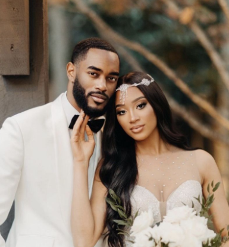
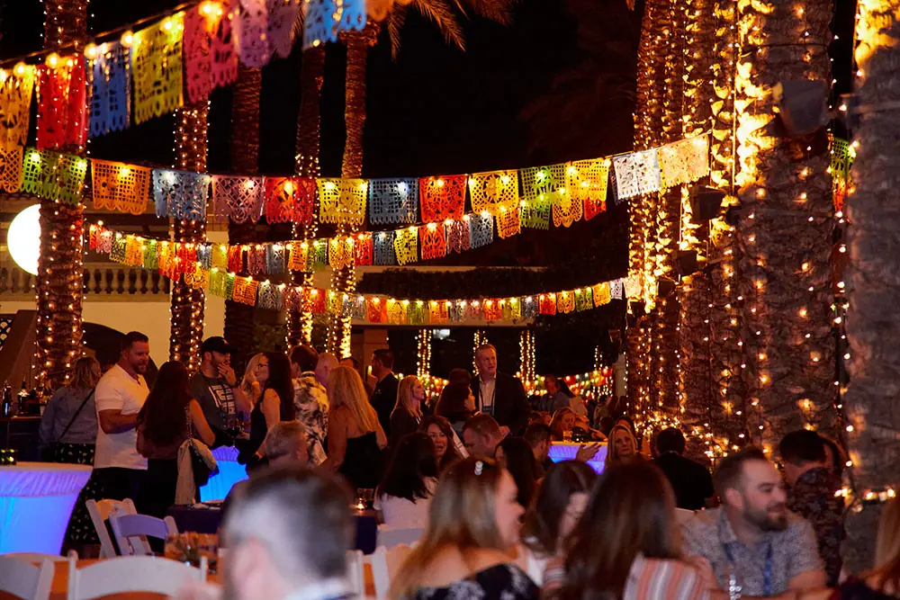

Behind the Lens
Hi, I'm Alexander Chase. I specialize in portraiture, street photography, and brand campaigns, capturing authentic emotion using natural light and bold contrast.
Hi, I'm Alexander Chase. I specialize in portraiture, street photography, and brand campaigns, capturing authentic emotion using natural light and bold contrast.
I believe every photograph should tell a story. My style focuses on candid moments, rich tones, and cinematic framing—turning simple moments into visual art.
Shooting on full-frame mirrorless camera bodies with fast prime lenses (35mm & 85mm) for ultra-sharp focus and natural depth of field.


